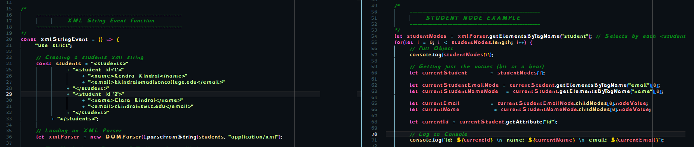
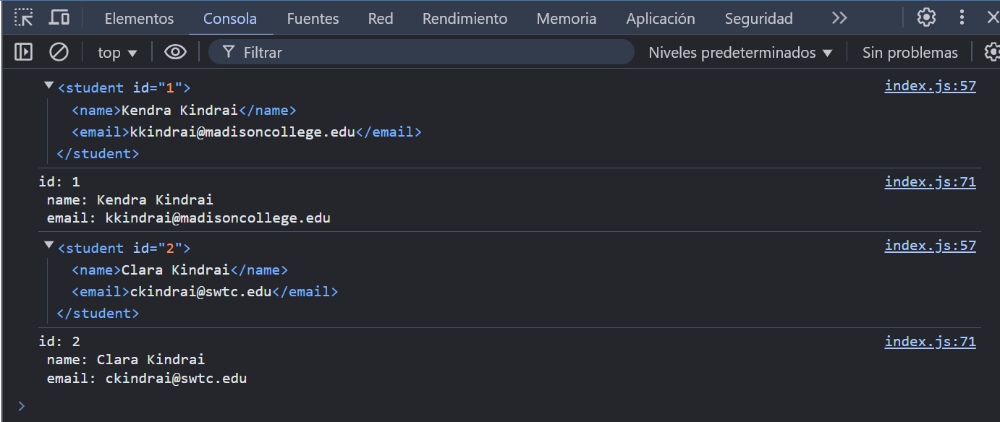
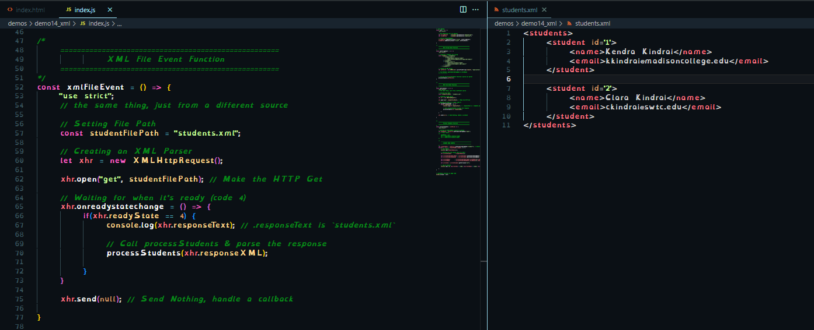
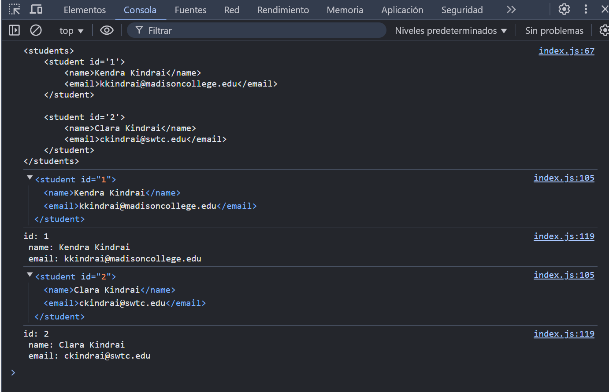

There are two basic ways to access XML, we will disucss them both.
< data >< / data >Below is code snippets of creating and accessing string based xml
 data.xmlBelow is code snippits of creating and accessing file based xml (requires a server)
 